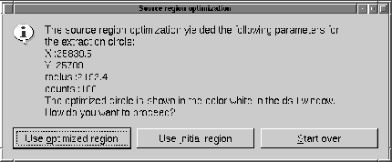

Unlike the other product categories the generation of spectral products
yields more than one output data set, viz.:
OGIP spectrum for selected source region
OGIP spectrum for selected background region
Redistribution Matrix File (RMF) corresponding to source spectrum
Auxiliary Response File (ARF) corresponding to source spectrum
These are created by the task especget
which in turn is a wrapper
around rmfgen
and arfgen. Please consult the description
of those package to learn more about functionality, flow of operations,
and limitations. The primary input to especget
is an image data
set and two spatial selection expressions which need to mark an
extraction region around a point source and a source-free background
region. These can be generated with xmmselect
in a convenient
manner:
create an image in detector or sky coordinates as described above
when the image is displayed in Ds9 mark a normal circular region
around the source of interest
mark another (not necessarily circular) region that shall comprise
only background events. In order that xmmselect
can distinguish the
source from the background region, the latter must be assigned the
Ds9 attribute Background. To do that, double click on
the region marker and in the upcoming dialog select ``Property''
and ``Background''. When done the border line style should change
from solid to dashed.
Be sure that no ``exclude'' regions have been selected.
click on OGIP Spectral Products. At this point xmmselect
shall read the two regions from Ds9 and perform some basic checks
for correctness (e.g. there is exactly one source and one background
region). In case this fails informative error messages with suggested
corrective actions shall be presented. If the two regions could be
successfully read especget
is directly called with the necessary
inputs unless the option to invoke
eregionanalyse on source image
is active. In this case there is an additional step which aims at
optimizing the position and extent of the source extraction region
before it is passed to especget. This is done by running
eregionanalyse
on the source region. Its primary output is an
optimized source region which shall be displayed as a white circle marker
on the image. In addition a dialog box with some numerical results
from the eregionanalyse
run will be shown:

Figure: Dialog with results of source region optimization
process
The dialog gives the option to proceed in three possible ways:
Use optimized region
The initially user-defined source region will be replaced by the new
optimized region
Use initial region
The optimized region will be erased from the image and execution proceeds
with the initially defined region
Start over
All regions will be deleted from the image - new initial selections
for source and background regions must be made
In the first and second case especget
is eventually invoked with
the appropriate input.
Please note that the production of an RMF with especget
is
a computationally intensive task and can take
several tens of minutes on a moderately loaded workstation. There is
however the option to skip the RMF-generation stage (please
consult especget
documentation for a description) in which
case the task should run to completion within minutes.
If it finishes successfully the generated source spectrum shall be shown via
dsplot.